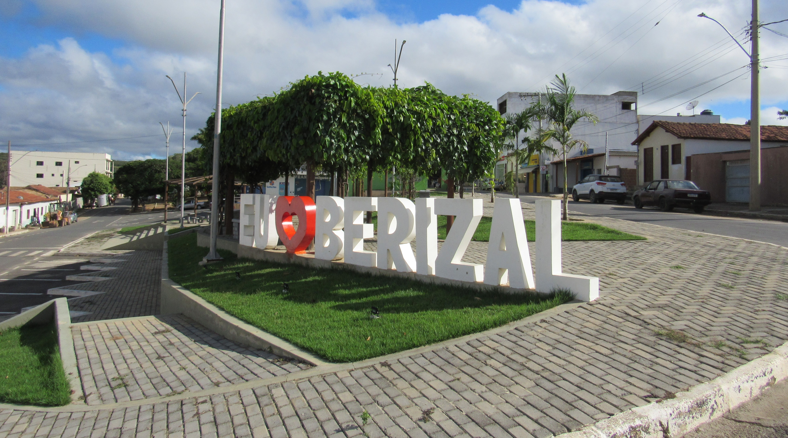

https://www.minasgerais.com.br/pt/destinos/berizal
https://www.ibge.gov.br/cidades-e-estados/mg/berizal.html
Berizal-MG
Bem vindo a Berizal!

Clique aqui para acessar o site da prefeitura
Entrada de Berizal - Clique na imagem para mais informações